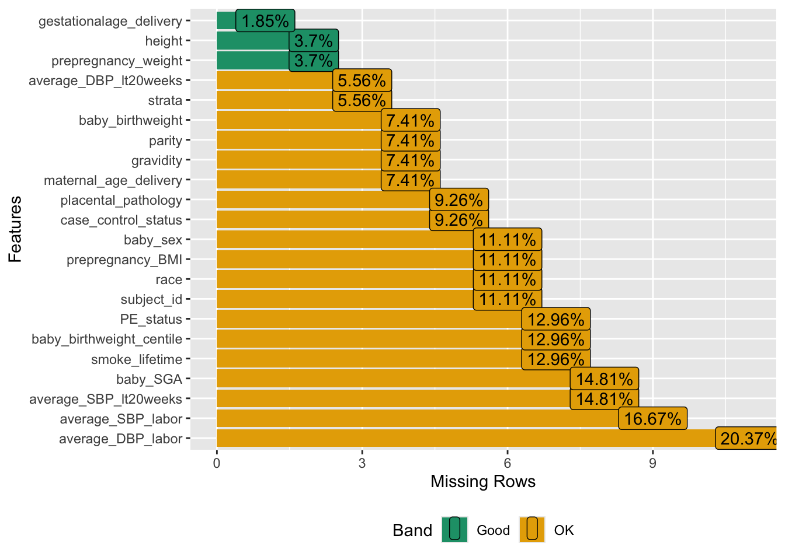
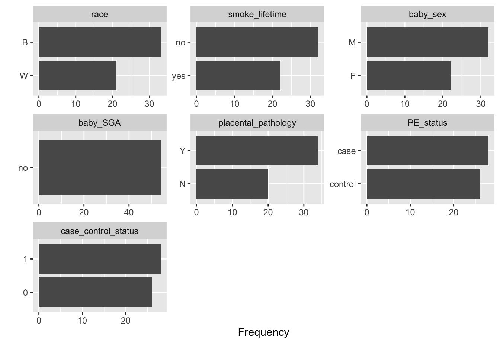
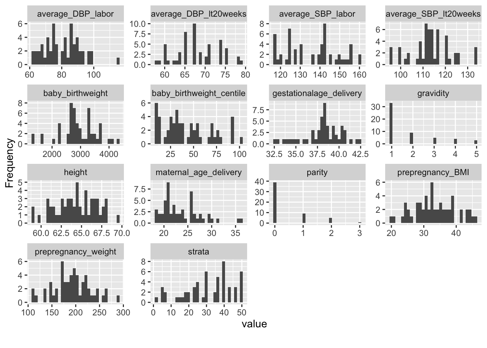
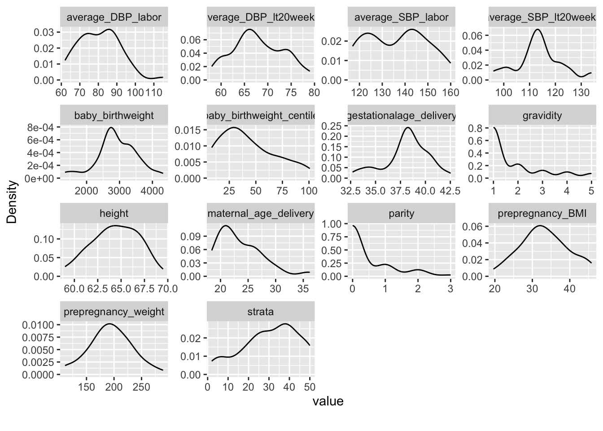

library(tidyverse)
library(tidylog)
library(DataExplorer)
library(GGally)23 R Exploratory Data Analysis Exercise
24 Exploratory Data Analysis
- Goal: Understand your data
- Ask questions
- Understand each phenotype
- Understand how each phenotype varies
- Understand how the phenotypes are related to each other
- Understand how the data are organized
- Plot often, plot everything!
24.1 Load Libraries
24.2 Explore Project 1 data
Let’s explore the Project 1 data set:
load("data/project1.RData", verbose = TRUE)Loading objects:
ds
dd- ds = data set
- dd = data dictionary
Project 1 Questions
- Which of the measurements are sample-specific?
- Which are subject-specific?
- How to structure the data for sharing via dbGaP?
24.3 Dimensions
- What are the dimensions of our data?
24.4 Dimensions
Task: Examine the dimensions of our data and data dictionary.
Expand to see solution
24.4.1 Data ds
dim(ds)[1] 191 24names(ds) [1] "sample_id" "Sample_trimester"
[3] "Gestationalage_sample" "subject_id"
[5] "strata" "race"
[7] "maternal_age_delivery" "case_control_status"
[9] "prepregnancy_weight" "height"
[11] "prepregnancy_BMI" "gravidity"
[13] "parity" "gestationalage_delivery"
[15] "average_SBP_lt20weeks" "average_DBP_lt20weeks"
[17] "average_SBP_labor" "average_DBP_labor"
[19] "smoke_lifetime" "baby_birthweight"
[21] "baby_sex" "baby_birthweight_centile"
[23] "baby_SGA" "placental_pathology" 24.4.2 Data dictionay dd
dim(dd)[1] 27 5names(dd)[1] "Original.Variable.Name" "R21.Variable.Name" "Description"
[4] "Variable.Units" "Variable.Coding" 24.5 Arrangement
- How are the data arranged?
- Is it in tidy format?
- Is it one row per sample or per subject?
- Were subjects sampled more than once?
24.5.1 Samples or subjects
Is it one row per sample or per subject?
Question: How would you figure out the answer to this question?
Expand to see solution
sum(duplicated(ds$sample_id))[1] 72length(unique(ds$sample_id))[1] 119length(unique(ds$subject_id))[1] 5424.5.2 Unique values
To figure out which phenotypes vary within subjects, it would be helpful to answer this question:
Question: How can we figure out the number of unique values in each column of our ds data frame?
A similar related question is: How would you count the number of subjects who have more than one distinct measure at each of the phenotypes?
Expand to see solution
sapply(ds, function(x) {
length(unique(x))
}) %>%
sort(decreasing = TRUE) %>%
kable()| x | |
|---|---|
| Gestationalage_sample | 189 |
| sample_id | 119 |
| subject_id | 54 |
| maternal_age_delivery | 54 |
| prepregnancy_BMI | 54 |
| gestationalage_delivery | 54 |
| baby_birthweight_centile | 52 |
| prepregnancy_weight | 51 |
| height | 42 |
| baby_birthweight | 30 |
| average_DBP_labor | 27 |
| average_SBP_labor | 23 |
| strata | 21 |
| average_SBP_lt20weeks | 19 |
| average_DBP_lt20weeks | 16 |
| gravidity | 5 |
| Sample_trimester | 4 |
| parity | 4 |
| race | 3 |
| case_control_status | 2 |
| smoke_lifetime | 2 |
| baby_sex | 2 |
| placental_pathology | 2 |
| baby_SGA | 1 |
This can also be generated using the map function from the purrr R package.
ds %>%
map(\(x) length(unique(x))) %>%
unlist() %>%
sort(decreasing = TRUE) %>%
kable()| x | |
|---|---|
| Gestationalage_sample | 189 |
| sample_id | 119 |
| subject_id | 54 |
| maternal_age_delivery | 54 |
| prepregnancy_BMI | 54 |
| gestationalage_delivery | 54 |
| baby_birthweight_centile | 52 |
| prepregnancy_weight | 51 |
| height | 42 |
| baby_birthweight | 30 |
| average_DBP_labor | 27 |
| average_SBP_labor | 23 |
| strata | 21 |
| average_SBP_lt20weeks | 19 |
| average_DBP_lt20weeks | 16 |
| gravidity | 5 |
| Sample_trimester | 4 |
| parity | 4 |
| race | 3 |
| case_control_status | 2 |
| smoke_lifetime | 2 |
| baby_sex | 2 |
| placental_pathology | 2 |
| baby_SGA | 1 |
Suppose we wanted to directly count the number of subjects who have more than one distinct measure at each of the phenotypes.
One approach for doing this would be to take the phenotype and group by subject_id and count distinct values within those subject-specific groups, and then add up the total number of subjects who have more than one distinct value.
subject.N <- function(df.col, subj.ID) {
# Count distinct entries when grouped by subj.ID Input: df.col = a
# phenotype vector subj.ID = a vector of corresponding subject IDs
# Construct a dataframe containing the phenotype and subject IDS
df <- bind_cols(df.col = df.col, subj.ID = subj.ID)
#
suppressMessages(df.n <- df %>%
group_by(subj.ID) %>%
distinct() %>%
mutate(n = n()) %>%
select(subj.ID, n) %>%
distinct())
# Count how many subj.ID's have more than one distinct value
sum(df.n$n > 1)
}
subj.ID <- ds$subject_id
# Apply our function using 'map'
ds %>%
map(\(x) subject.N(x, subj.ID)) %>%
unlist() %>%
sort(decreasing = TRUE) Gestationalage_sample sample_id Sample_trimester
47 39 34
race subject_id strata
1 0 0
maternal_age_delivery case_control_status prepregnancy_weight
0 0 0
height prepregnancy_BMI gravidity
0 0 0
parity gestationalage_delivery average_SBP_lt20weeks
0 0 0
average_DBP_lt20weeks average_SBP_labor average_DBP_labor
0 0 0
smoke_lifetime baby_birthweight baby_sex
0 0 0
baby_birthweight_centile baby_SGA placental_pathology
0 0 0 The variables with a count of zero here are those where no more than 1 distinct value was observed for each subject. These are likely subject-level variables. Indeed, for the majority of these, the variable names are consistent with them being subject-level variables instead of variables that are measured every time a sample was taken.
24.5.3 Subject-level data set
Task: Construct a subject-level data set ds.subj
How would you construct a subject-level data set?
Expand to see solution
We need to drop the sample-specific measures, retaining only subject-level measures, and then select unique records:
ds.subj <- ds %>%
select(-sample_id, -Sample_trimester, -Gestationalage_sample) %>%
distinct()select: dropped 3 variables (sample_id, Sample_trimester, Gestationalage_sample)
distinct: removed 136 rows (71%), 55 rows remainingBut there is a duplicated record where race differs but all other attributes are identical, so we filter one of those two records out:
sum(duplicated(ds.subj$subject_id))[1] 1ds.subj %>%
group_by(subject_id) %>%
filter(n() > 1)group_by: one grouping variable (subject_id)
filter (grouped): removed 53 rows (96%), 2 rows remaining (removed 53 groups, one group remaining)# A tibble: 2 × 21
# Groups: subject_id [1]
subject_id strata race maternal_age_delivery case_control_status
<chr> <dbl> <chr> <dbl> <dbl>
1 SUBJ20 35 W 29.4 1
2 SUBJ20 35 White 29.4 1
# ℹ 16 more variables: prepregnancy_weight <dbl>, height <dbl>,
# prepregnancy_BMI <dbl>, gravidity <dbl>, parity <dbl>,
# gestationalage_delivery <dbl>, average_SBP_lt20weeks <dbl>,
# average_DBP_lt20weeks <dbl>, average_SBP_labor <dbl>,
# average_DBP_labor <dbl>, smoke_lifetime <chr>, baby_birthweight <dbl>,
# baby_sex <chr>, baby_birthweight_centile <dbl>, baby_SGA <chr>,
# placental_pathology <chr>ds.subj <- ds.subj %>%
filter(race != "White")filter: removed one row (2%), 54 rows remainingsum(duplicated(ds.subj$subject_id))[1] 024.6 Coding
- How are the data coded?
- Are they coded correctly?
- Which are categorical and which are continuous?
- Are they coded consistently with the data dictionary?
- Is there a data dictionary?
- Do we need to skip rows when reading the data in?
24.6.1 Recode for understandability
Using the subject-level data set ds.subj, let’s recode case_control_status from 0 and 1 into a new PE_status variable coded as control and case.
First, look up the coding used for the case_control_status variable in the Data Dictionary dd:
dd %>%
filter(R21.Variable.Name == "case_control_status") %>%
pull(Variable.Coding)filter: removed 26 rows (96%), one row remaining[1] "0: normotensive control; 1: preeclampsia case"Task: Using the subject-level data set ds.subj, recode case_control_status from 0 and 1 into a new PE_status variable coded as control and case.
Expand to see solution
So the data dictionary gives the meaning of the 0 and 1 codes:
“0: normotensive control; 1: preeclampsia case”
ds.subj$PE_status <- factor(ds.subj$case_control_status)
levels(ds.subj$PE_status)[1] "0" "1"levels(ds.subj$PE_status) <- c("control", "case")
# Check that the recoding was correct:
xtabs(~case_control_status + PE_status, data = ds.subj) PE_status
case_control_status control case
0 26 0
1 0 28Recoding could also be done using Tidyverse function:
ds.subj <- ds.subj %>%
mutate(PE_status = case_when(case_control_status == 0 ~ "control", case_control_status ==
1 ~ "case"))mutate: converted 'PE_status' from factor to character (0 new NA)xtabs(~case_control_status + PE_status, data = ds.subj) PE_status
case_control_status case control
0 0 26
1 28 024.7 Missing data
- What is the pattern of missing data?
- How are missing data coded?
- Is there a single missing data code?
Here we could use plot_missing from the DataExplorer R package.
https://boxuancui.github.io/DataExplorer/index.html
Task: Try out plot_missing on the subject-level data set ds.subj.
Expand to see solution
plot_missing(ds.subj)It is kind of unusual to have no missing data in a real data set.
To see what the output might look like when there is some missing data, let’s introduce some using the createNAs function from this StackOverflow entry:
createNAs <- function(x, pctNA = 0.1) {
n <- nrow(x)
p <- ncol(x)
NAloc <- rep(FALSE, n * p)
NAloc[sample.int(n * p, floor(n * p * pctNA))] <- TRUE
x[matrix(NAloc, nrow = n, ncol = p)] <- NA
return(x)
}
df <- ds.subj
df <- createNAs(df)
df <- data.frame(df)
plot_missing(df)
profile_missing(df) feature num_missing pct_missing
1 subject_id 7 0.12962963
2 strata 5 0.09259259
3 race 7 0.12962963
4 maternal_age_delivery 6 0.11111111
5 case_control_status 3 0.05555556
6 prepregnancy_weight 7 0.12962963
7 height 4 0.07407407
8 prepregnancy_BMI 3 0.05555556
9 gravidity 3 0.05555556
10 parity 6 0.11111111
11 gestationalage_delivery 5 0.09259259
12 average_SBP_lt20weeks 6 0.11111111
13 average_DBP_lt20weeks 8 0.14814815
14 average_SBP_labor 2 0.03703704
15 average_DBP_labor 11 0.20370370
16 smoke_lifetime 6 0.11111111
17 baby_birthweight 4 0.07407407
18 baby_sex 7 0.12962963
19 baby_birthweight_centile 3 0.05555556
20 baby_SGA 4 0.07407407
21 placental_pathology 7 0.12962963
22 PE_status 4 0.07407407When there is some missing data, in addition to applying plot_missing and profile_missing, you could also apply functions from the ‘VIM’ R package, which has a number of commands that are useful for visualizing missing data patterns.
https://cran.r-project.org/web/packages/VIM/vignettes/VIM.html
24.8 Distribution
- What is the distribution of each of our phenotypes?
- Are data skewed?
- What is the range of values?
- Is the range of values realistic?
Potentially useful DataExplorer commands to use in this context include:
plot_bar Plot bar chart
plot_density Plot density estimates
plot_histogram Plot histogram
plot_qq Plot QQ plotTask: Try out these commands.
Expand to see solution
plot_bar(ds.subj)1 columns ignored with more than 50 categories.
subject_id: 54 categories
plot_histogram(ds.subj)
plot_density(ds.subj)
plot_qq(ds.subj)24.9 Variation
- How do our data vary and co-vary?
- Do multiple measures agree with each other?
- Are there sex-specific or age-specific differences?
Task: As it is of interest to examine how our traits vary by pre-eclampsia case/control status, we can explore this by using the by="PE_status" argument within the DataExplorer commands to break down the plots drawn in the previous section by PE_status.
Also try creating boxplots using the plot_boxplot command.
Expand to see solution
24.9.1 Bar plots
plot_bar(ds.subj, by = "PE_status")1 columns ignored with more than 50 categories.
subject_id: 54 categories24.9.2 Box plots
plot_boxplot(ds.subj, by = "PE_status")24.9.3 QQ plots
plot_qq(ds.subj, by = "PE_status")24.9.4 Correlation
For plotting correlation matrices, DataExplorer provides the plot_correlation command.
Task: Try plot_correlation out, on the subset of numeric columns.
Expand to see solution
plot_correlation(ds.subj %>%
select(where(is.numeric)))select: dropped 7 variables (subject_id, race, smoke_lifetime, baby_sex,
baby_SGA, …)24.9.5 ggpairs
Use ggpairs from the GGally R package.
# To illustrate, let's just use three of the numeric traits:
ds1 <- ds.subj[, c(15, 17, 19)]
names(ds1)[1] "average_DBP_labor" "baby_birthweight"
[3] "baby_birthweight_centile"Task: Try it out - apply ggpairs to ds1.
Expand to see solution
ggpairs(ds1)Task: Redraw the ggpairs plot, using the mapping argument to color by PE_status.
To figure out how do this, look at the examples in the ?ggpairs function documentation.
Hint
This cannot be done using the ds1 object because that does not contain any PE_status information.
Expand to see solution
ggpairs(ds.subj, columns = c(15, 17, 19), ggplot2::aes(color = PE_status))24.9.6 ggcorr
Note
The ggcorr function from the GGally R package can also be used to make a correlation matrix plot.
ggcorr(ds1, label = TRUE)
24.10 DataExplorer
We can quickly create a report using the create_report function from the DataExplorer R package
create_report(ds.subj)See
24.11 dataMaid
The dataMaid R package can also be used to create an exporatory data analysis report.
library(dataMaid)
makeDataReport(ds.subj, output="html")See
24.12 SmartEDA
The SmartEDA R package also has a command to create an exploratory data analysis report - this command is ExpReport.
library(SmartEDA)
ExpReport(ds.subj, op_file="SmartEDAReport.html")
ExpReport(ds.subj, Target="PE_status", Rc="control", op_file="SmartEDAReportII.html")For more information, see https://cran.r-project.org/web/packages/SmartEDA/vignettes/SmartEDA.html